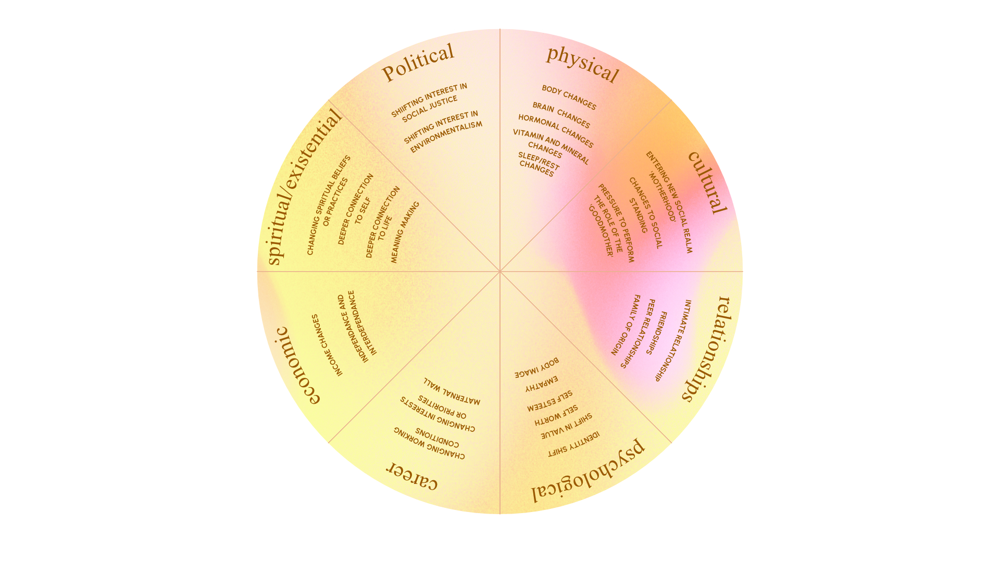

Kaha Mind
The
Dossier
May

Editor's Note
Welcome to this month's issue of The Dossier, where we translate emerging psychological research into insights for therapeutic practice.
Around Mother’s Day, conversations about motherhood often become sentimental. We celebrate sacrifice, resilience, and unconditional love. Far less often do we talk about the psychological disorientation that can accompany becoming a mother.
When new mothers walk into a therapy room, they often come in with something difficult to name, an overwhelming sense that they are struggling with a life that looks the way they hoped it would, yet feels nothing like they expected. They describe grief over a self that has changed, exhaustion that sleep does not fix, and love that can feel unsettlingly like loss. Many experience these feelings in isolation, leading them to believe there is something specifically wrong with them.
This month, we explore matrescence, the life phase of transition to motherhood through a 2025 pilot study by Trinko, Sarewitz, and Athan, which tested whether a structured, matrescence-informed education program could meaningfully support new mothers' psychological well-being. Beyond its findings, the study offers an important reframe: naming what mothers go through and taking it seriously appears to matter - shaping how they understand themselves, how they relate to others, and how they move through one of life’s most significant transitions.
Article in Focus
Trinko, V., Sarewitz, J., & Athan, A. (2025). Improving maternal well-being: a matrescence education pilot study for new mothers. Maternal Health, Neonatology and Perinatology, 11:18. https://doi.org/10.1186/s40748-025-00203-0
Key Takeaways
- Naming the transition matters: Simply introducing mothers to the concept of matrescence and framing their experience as a recognised developmental process was associated with meaningful shifts in self-compassion, self-acceptance, and a reduced sense of isolation
- A matrescence-informed program can build resilience: Mothers showed significant gains in personal strength, improved relationships, self-compassion, and competence in managing and adapting to their environment, suggesting that the program supported mothers in developing new capacities rather than only reducing distress.
- Psychoeducation alone is not enough: Mothers showed significant gains in personal strength, improved relationships, self-compassion, and competence in managing and adapting to their environment, suggesting that the program supported mothers in developing new capacities rather than only reducing distress.
- Conventional maternal care leaves significant gaps: Participants entered motherhood poorly prepared for its psychological and developmental dimensions, despite having access to biomedical information. Matrescence-informed education represents a proactive, strengths-based approach to filling this gap.
By the Numbers
Before turning to the research, it is worth pausing to look at what’s at stake. The statistics on maternal mental health describe a significant and ongoing gap between what mothers need and what they receive:
Between 50–80% of all postpartum women experience maternity blues, a mild but common form of emotional disturbance in the early postpartum period.
In low- and middle-income countries, one in six pregnant women experiences common mental disorders, with 15-57% screening positive for depression during pregnancy.
Research indicates that the prevalence of postpartum depression in India is around 22%, which is significantly higher than the 12.9% reported across studies in high-income countries.
All indicators on maternal mental health are excluded from India's National Family Health Survey (NFHS-5), one of the country's largest sources of health data, rendering postpartum psychological distress largely invisible at the population level.
An analysis of eleven national policy documents covering maternal health and mental health in India found that not one included any provisions for perinatal mental health.
Matre…what?
Matrescence is a term coined by medical anthropologist Dana Raphael in 1973 to describe the transition to motherhood as a developmental rite of passage, much like adolescence, with biological and social implications. A more recent definition by Athan (2024) expands this considerably, describing matrescence as a "…lifespan, developmental transformation that is biological, neurological, psychological, social, cultural, economic, political, moral, existential, ecological, and spiritual in nature."

What does that actually look like? A mother's brain undergoes considerable neuroplastic changes during this period, enhancing areas responsible for bonding, social sensitivity, memory, attention, and executive function. Psychologically, new mothers navigate a profound reorganisation of self - one that can surface questions about identity, gender role expectations, the balance between work and family, and, for some, a deepening of personal values and faith.
Much like the growing pains of adolescence, matrescence offers significant opportunities to reassess roles, responsibilities, and identities and to establish different priorities and uncover personal strengths. A developmental lens makes room for this possibility, rather than pathologising the stress responses that accompany it.
Matrescence education aims to bolster these self-righting capacities by combining evidence-based knowledge, practical skill-building, and peer social support, preparing mothers to navigate this transition with greater confidence, resilience, and access to the resources they need.
Article in a Nutshell
Trinko et al. (2025) evaluated a six-week, matrescence-informed education program for new mothers, delivered online via Zoom. Eighteen mothers with children aged 0–4 years participated in weekly 75-minute sessions combining lectures on the domains of matrescence, resilience-building exercises, group discussions, and peer learning. Between sessions, participants completed self-reflective journaling and homework assignments to integrate and apply what they had explored. Unlike conventional perinatal education, the program was centered on personal growth and self-awareness for the mothers themselves. The sample was predominantly highly educated and married.
A pre-post design was used, and five validated positive psychology scales were administered before and after the program to evaluate participants’ perceived well-being: the Five Facet Mindfulness Questionnaire (FFMQ), the Self-Compassion Scale Short Form (SCS-SF), the Post-Traumatic Growth Inventory (PTGI), the Perceived Stress Scale (PSS), and the Psychological Wellbeing Scale (PWB). Qualitative open-ended questions were included in both assessments to capture participants' lived experiences of matrescence.
The study had three goals: (1) to evaluate the relevance and utility of matrescence as a concept for navigating the transition to motherhood; (2) to measure the program's impact on overall maternal wellbeing across the five scales; and (3) to assess the acceptability of the program by mothers for addressing the challenges of matrescence.
Findings
Quantitative
The program showed meaningful gains across several measures. Self-compassion increased significantly. Post-traumatic growth showed substantial improvement overall, with particularly strong gains in personal strength, improved relationships, and spiritual growth, indicating positive psychological transformation and adaptive coping mechanisms among participants. Within the mindfulness measure, sub-scales of observing, non-judging, and non-reactivity all improved significantly, even though overall mindfulness scores did not. These changes reflect mothers’ improved awareness of sensory experiences, reduced self-criticism, and an enhanced ability to remain unaffected by internal experiences. Environmental mastery, i.e., the sense of competence in managing one's circumstances, also improved significantly. No significant change was observed in perceived stress and overall psychological well-being.
Qualitative
Thematic analysis of open-ended responses revealed several themes. Participants described significant transition challenges, including physical changes, altered body perception, identity shifts, and emotional upheaval, as well as adjustments to relationships, lifestyle, and career. These were often compounded by distress due to the transition, e.g., intense exhaustion, isolation, mood difficulties, relational conflict, and financial and workplace stressors.
Additionally, while most participants felt well-prepared for the practical aspects of childbirth, few had encountered the concept of matrescence before the program. Engaging with it was widely described as validating, giving participants both a framework for making sense of their experience and a new language to articulate what they were moving through.
Many participants also described meaningful growth: becoming more reflective, less self-critical, and more confident in their ability to manage their circumstances - findings that mirrored the quantitative results. Peer sharing with other mothers and community support emerged as one of the most valued aspects of the program, with participants describing reduced isolation, increased agency and belonging, and a greater awareness of external resources and help-seeking pathways.
Finally, the program received strong endorsement for perceived acceptability and benefits. Participants praised its relevance and applicability to their lives, and many described it as playing a meaningful role in their personal growth and emotional well-being.
Limitations
The findings should be interpreted keeping the following in mind:
- The sample size was small (n = 18; analyses restricted to n = 14 who completed both surveys), and participants were predominantly highly educated and financially secure. This limits the applicability to more diverse populations and the overall generalisability of the results.
- Some participants dropped out or attended the program inconsistently, which could have influenced the intervention’s effectiveness.
- The absence of a control group means improvements in well-being cannot be attributed solely to the matrescence curriculum.
- There was no long-term follow-up, so whether gains were sustained remains unknown.
Matrescence and the (Indian) Therapy Room
In India, motherhood often arrives alongside a reorganisation of a woman's position within her family system, whether it's new expectations from in-laws, shifts in her relationship with her partner, or a significant renegotiation of her professional identity. By the time a woman sits across from a therapist, she may be carrying all of this and still struggling to name what feels so hard. This is partly because the cultural script around motherhood in India offers little room for ambivalence.
Motherhood is framed as natural, sacred, and self-completing; as something a woman should feel grateful for and instinctively equipped to handle. Clients rarely present saying, "I am finding motherhood difficult." More often, the difficulty surfaces gradually once they feel certain it will not be met with judgment. It often shows up as sleep problems, irritability, somatic complaints, or a vague sense of disconnection.
A matrescence lens can be especially helpful here. Introducing the concept and framing the transition to motherhood as a recognised developmental process, as significant and disorienting as adolescence, gives clients permission to take their own experience seriously. For women who have been socialised to minimize their inner lives in the service of their families, being offered language that validates rather than dismisses can shift the entire texture of the therapeutic relationship.
It is also worth attending to the specific forms matrescence takes in the Indian context. Women in nuclear households may grieve the absence of extended family support that is culturally assumed to exist. Women in joint families may face a different set of pressures: navigating layered expectations, reduced privacy, and limited autonomy. And as explored in our March issue, domestic labour and emotional management continue to fall disproportionately on women after a child is born, even in dual-income households. This makes the resentment and exhaustion accompanying matrescence predictable rather than pathological.
Meeting clients with a developmental frame rather than a diagnostic one - one that validates that what they are experiencing is a complex and significant transition rather than a personal failure - can make a meaningful difference to their mental health and well-being.
Clinical Toolkit for Therapists
| 1. | Normalize Matrescence as a Developmental Transition | Distress during early motherhood is often interpreted as pathology or personal inadequacy. Introducing matrescence as a normative developmental transition can help reframe identity shifts, emotional upheaval, and relational changes as expected. This normalization can reduce shame and support self-understanding. |
| 2. | Map Identity Shifts and Role Transitions | Motherhood often involves a reworking of identity, where clients may experience both loss of their pre-motherhood self and the emergence of a new maternal identity. Supporting clients in naming and holding these parallel experiences can reduce internal conflict and allow different parts of the self to coexist more flexibly. |
| 3. | Differentiate Developmental Distress from Clinical Risk | The transition to motherhood includes ambivalence, exhaustion, and emotional variability, which may overlap with postpartum mental health concerns. Therapists can help clients distinguish between expected adjustment-related distress and signs requiring additional support, enabling both validation and timely intervention. |
| 4. | Strengthen Self-Compassion and Reduce Maternal Self-Judgment | Many mothers hold themselves to unrealistic standards around caregiving and emotional availability. Therapeutic work can focus on identifying self-critical patterns, fostering self-compassion, and normalizing the coexistence of conflicting emotions. |
| 5. | Address Isolation and Facilitate Support Systems | Motherhood often reorganises social relationships, leading to isolation or reduced support. Exploring shifts in friendships, partnerships, and caregiving resources can help identify gaps. Encouraging connection through partners, family, or peer networks can reduce distress and enhance resilience. |
| 6. | Reframe Maternal Distress from “Personal Failure” to “Contextual Strain” | Maternal distress is shaped not only by individual coping but also by broader social and structural conditions. Psychologists can play a role beyond the therapy room by collaborating with obstetricians, gynecologists, pediatricians, and maternal health clinics to integrate matrescence-informed psychoeducation into prenatal and postnatal care. While many hospital-based programs primarily focus on physical recovery, childbirth, and infant care, there remains limited attention to identity shifts, emotional adjustment, relationship changes, and the psychological transition to motherhood. Interdisciplinary collaboration can help introduce preventive mental health support earlier in the perinatal period, normalize maternal distress, improve maternal health literacy, and reduce stigma around help-seeking. |
What's Coming Next: Save the Date
Stay tuned for our next Dossier issue in June! In the meantime, we welcome your input. If you have ideas for research questions or areas you would like the digest to explore, please share them with us at research@kahamind.com
References & Further Reading (Happy Reading!)
Antony, S., & Aswathy, P. V. (2026). Prevalence of postpartum depression at subnational level in India: A systematic review and meta-analysis. Women & Health, 66(3). https://doi.org/10.1080/03630242.2026.2626757.
Athan, A. M. (2024). A critical need for the concept of matrescence in perinatal psychiatry. Frontiers in Psychiatry, 15, 1364845.Athan, A., & Reel, H. L. (2015). Maternal psychology: Reflections on the 20th anniversary of Deconstructing Developmental Psychology. Feminism & Psychology, 25(3), 311–325.
Bombino, A. (2022, September 1). The realities of becoming a mother: A quick guide to matrescence. Andrea Bombino Coaching & Consultinghttps://andreabombino.com/a-quick-guide-to-matrescence/
Choedon, Y., & Kumar, M. (2023). Integrating nutrition and mental health screening, risk identification and management in prenatal health programs in India. International Journal of Gynecology & Obstetrics, 161(S1)https://doi.org/10.1002/ijgo.14728.
Murthy, V. (2024). Parents under pressure: The U.S. Surgeon General's advisory on the mental health and well-being of parents. U.S. Department of Health and Human Services.https://www.hhs.gov
Priyadarshini, U., Lamba, S., & Bhattacharya, A. (2023). Recommendations for maternal mental health policy in India. Journal of Public Health Policy, 44, 25–38. https://doi.org/10.1057/s41271-022-00384-4
Rajeev, S. P., Nair, G. M., Krishna, K. K., & Maria, C. (2025). India's silent struggle: A scoping review on postpartum depression in the land of a billion mothers. Indian Journal of Psychological Medicine, 47(1). https://doi.org/10.1177/02537176241245773.
Shroff, M., Behere, A., & Shastri, P. (2025). "I used to be someone else": Postpartum identity and invisible labor among urban mothers in Chennai, an interpretative phenomenological study. PMC. https://pmc.ncbi.nlm.nih.gov/articles/PMC12756369/
Trinko, V., Sarewitz, J., & Athan, A. (2025). Improving maternal well-being: A matrescence education pilot study for new mothers. Maternal Health, Neonatology and Perinatology, 11:18. https://doi.org/10.1186/s40748-025-00203-0
Upadhyay, R. P., Chowdhury, R., Salehi, A., Sarkar, K., Singh, S. K., Sinha, B., Pawar, A., Rajalakshmi, A. K., & Kumar, A. (2017). Postpartum depression in India: A systematic review and meta-analysis. Bulletin of the World Health Organization, 95(10), 706–717. https://doi.org/10.2471/BLT.17.192237